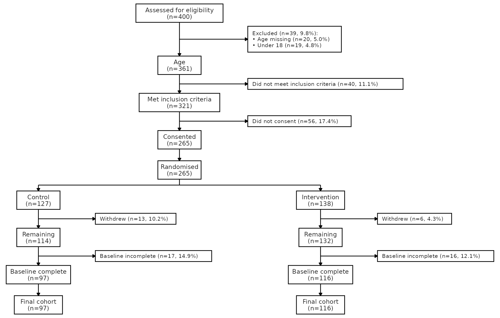
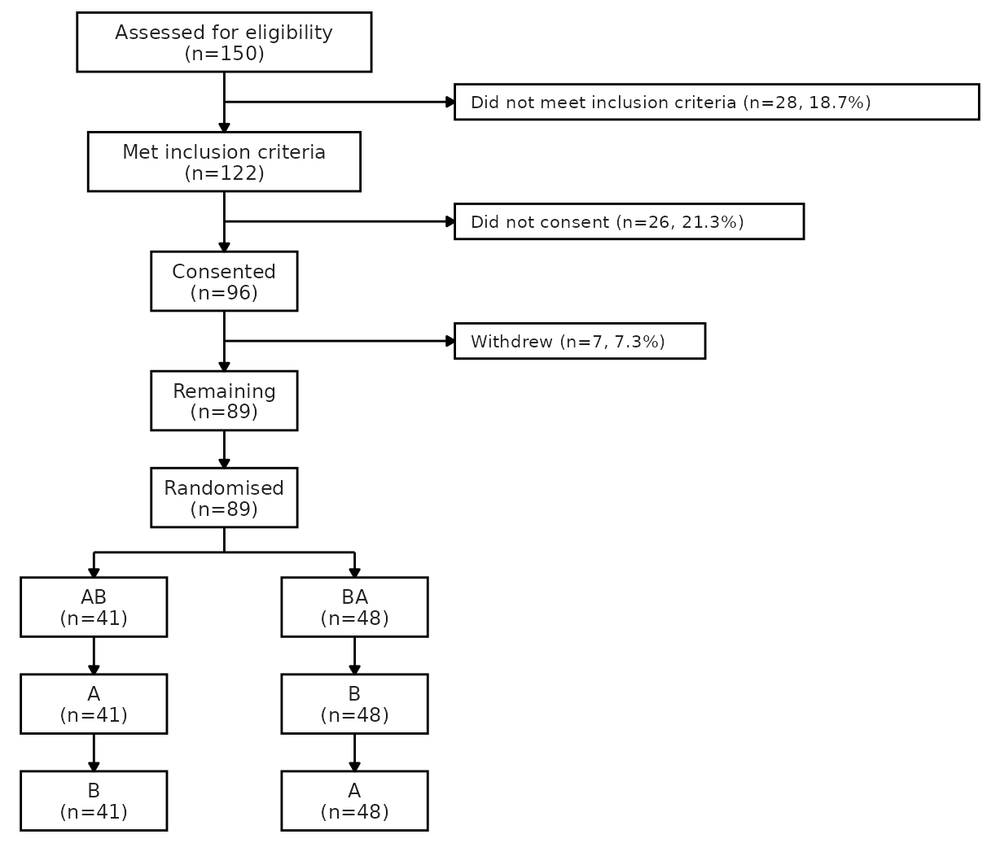
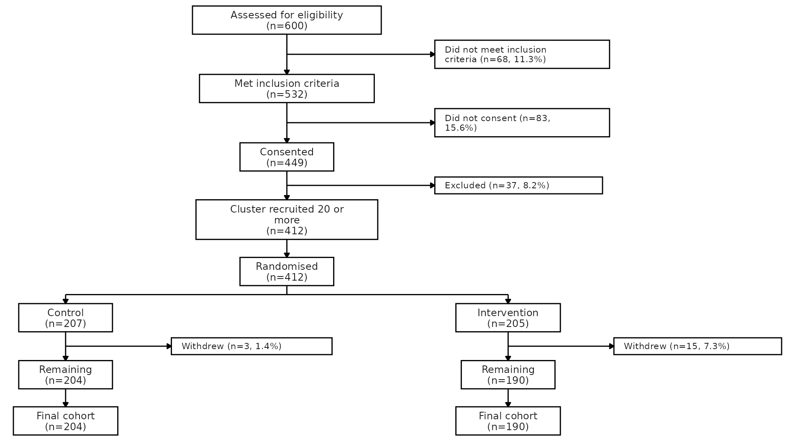
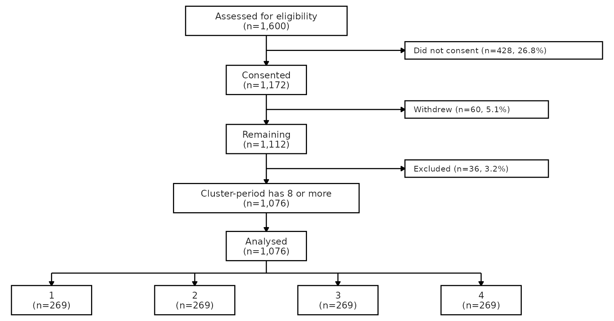

One complete, copyable example per study design, from data to diagram and table. Each uses one of the package’s mock-data generators, so it runs as is; swap in your own data and criteria.
| Design | Generator | Unit of a row | What’s different |
|---|---|---|---|
| Parallel-group RCT | mock_parallel_rct() |
participant | per-arm cascade after randomise()
|
| Crossover trial | mock_crossover() |
participant-period | sequences and periods; count_by a hierarchy level |
| Cluster RCT | mock_cluster_rct() |
participant | cluster rules; cluster and participant counts |
| Stepped-wedge trial | mock_stepped_wedge() |
participant-period | cluster-periods; site × period grid |
Parallel-group randomised trial
Participants are individually randomised. Losses after allocation are reported per arm.
dat <- mock_parallel_rct(n_participants = 400, seed = 1)
crit <- cf_criteria() |>
include(~ !is.na(age), label = "Age recorded", reason = "Age missing", category = "Age") |>
include(~ age >= 18, label = "Aged 18 or over", reason = "Under 18", category = "Age") |>
include(~ eligible_screen, label = "Met inclusion criteria", reason = "Did not meet inclusion criteria") |>
include(~ !is.na(consent_date), label = "Consented", reason = "Did not consent") |>
randomise(by = "participant_id", arms = "arm") |>
exclude(~ withdrew, label = "Withdrew") |>
include(~ baseline_complete, label = "Baseline complete", reason = "Baseline incomplete")
flow <- apply_criteria(dat, crit, id = "participant_id")
as_consort_diagram(flow)
as_attrition_table(flow, backend = "gt")| Criterion | N | Removed | % removed | Control | Intervention |
|---|---|---|---|---|---|
| Assessed for eligibility | 400 | ||||
| Age | 400 | 39 | 9.8% | ||
| Age recorded | 400 | 20 | 5.0% | ||
| Aged 18 or over | 380 | 19 | 4.8% | ||
| Met inclusion criteria | 361 | 40 | 11.1% | ||
| Consented | 321 | 56 | 17.4% | ||
| Randomised | 265 | — | — | ||
| Withdrew | 265 | 19 | 7.2% | ||
| Baseline complete | 246 | 33 | 13.4% | ||
| Final cohort | 213 | 53.2% included | 97 | 116 |
Crossover trial
Each participant receives both treatments, in a randomised order
(sequence). The data has one row per participant per period, so rows are
identified by event_id. The hierarchy names both units, and
count_by = "participant" makes every box count
participants.
co <- mock_crossover(n_participants = 150, seed = 1)
crit_co <- cf_criteria() |>
include(~ eligible_screen, label = "Met inclusion criteria",
reason = "Did not meet inclusion criteria") |>
include(~ !is.na(consent_date), label = "Consented", reason = "Did not consent") |>
exclude(~ withdrew, label = "Withdrew")
flow_co <- apply_criteria(
co, crit_co, id = "event_id",
hierarchy = cf_hierarchy(period = "event_id", participant = "participant_id")
)
as_consort_diagram(
flow_co,
branch_by = "sequence",
stage_by = "period",
stage_label_by = "arm",
count_by = "participant",
final_label = "Randomised"
)
The same hierarchy gives a table with participants and participant-periods side by side:
as_attrition_table(
flow_co,
levels = c("participant", "period"),
level_labels = c("Participants", "Participant-periods"),
backend = "gt"
)| Criterion |
Participants
|
Participant-periods
|
||||
|---|---|---|---|---|---|---|
| N | Removed | % removed | N | Removed | % removed | |
| Assessed for eligibility | 150 | 300 | ||||
| Met inclusion criteria | 150 | 28 | 18.7% | 300 | 56 | 18.7% |
| Consented | 122 | 26 | 21.3% | 244 | 52 | 21.3% |
| Withdrew | 96 | 7 | 7.3% | 192 | 14 | 7.3% |
| Final cohort | 89 | 59.3% included | 178 | 59.3% included | ||
Cluster-randomised trial
Clusters (practices, schools, wards) are randomised, and participants
are recruited within them. Cluster-level rules use
group_include() or group_exclude(), and the
CONSORT cluster extension asks for losses at both levels.
cl <- mock_cluster_rct(n_clusters = 16, n_participants = 600, seed = 7)
crit_cl <- cf_criteria() |>
include(~ eligible_screen, label = "Met inclusion criteria", reason = "Did not meet inclusion criteria") |>
include(~ !is.na(consent_date), label = "Consented", reason = "Did not consent") |>
group_include(by = "cluster_id", ~ n() >= 20,
label = "Cluster recruited 20 or more") |>
randomise(by = "cluster_id", arms = "arm") |>
exclude(~ withdrew, label = "Withdrew")
flow_cl <- apply_criteria(
cl, crit_cl, id = "participant_id",
hierarchy = cf_hierarchy(participant = "participant_id", cluster = "cluster_id")
)
as_consort_diagram(flow_cl, wrap_width = 24)
as_attrition_table(
flow_cl,
levels = c("participant", "cluster"),
level_labels = c("Participants", "Clusters"),
backend = "gt"
)| Criterion |
Participants
|
Clusters
|
||||||
|---|---|---|---|---|---|---|---|---|
| N | Removed | % removed | Consequential | N | Removed | % removed | Consequential | |
| Assessed for eligibility | 600 | 15 | ||||||
| Met inclusion criteria | 600 | 68 | 11.3% | — | 15 | — | — | — |
| Consented | 532 | 83 | 15.6% | — | 15 | — | — | — |
| Cluster recruited 20 or more | 449 | — | — | 37 | 15 | 5 | 33.3% | — |
| Randomised | 412 | — | — | — | 10 | — | — | — |
| Withdrew | 412 | 18 | 4.4% | — | 10 | — | — | — |
| Final cohort | 394 | 65.7% included | 10 | 66.7% included | ||||
The “Consequential” column counts participants lost only because their cluster was removed. See Hierarchical and cluster designs.
Stepped-wedge trial
Every cluster starts in the control condition and crosses to the intervention at a randomised time, so each cluster contributes to both conditions over the periods of the trial. Results are usually reported by period, and losses by cluster-period.
sw <- mock_stepped_wedge(n_clusters = 8, n_participants = 400,
n_periods = 4, n_sites = 2, seed = 3)
crit_sw <- cf_criteria() |>
include(~ !is.na(consent_date), label = "Consented", reason = "Did not consent") |>
exclude(~ withdrew, label = "Withdrew") |>
group_include(by = c("cluster_id", "period"), ~ n() >= 8,
label = "Cluster-period has 8 or more")
flow_sw <- apply_criteria(
sw, crit_sw, id = "event_id",
hierarchy = cf_hierarchy(
observation = "event_id",
cluster_period = c("cluster_id", "period"),
cluster = "cluster_id"
)
)
as_consort_diagram(flow_sw, branch_by = "period", final_label = "Analysed")
Attrition by site and period, with each block counted separately:
as_attrition_table(
flow_sw,
backend = "gt",
group_x = "site_id", group_x_label = "Site",
group_y = "period", group_y_label = "Period"
)| Criterion |
Site: S1
|
Site: S2
|
||||
|---|---|---|---|---|---|---|
| N | Removed | % removed | N | Removed | % removed | |
| Period: 1 | ||||||
| Assessed for eligibility | 110 | 290 | ||||
| Consented | 110 | 23 | 20.9% | 290 | 84 | 29.0% |
| Withdrew | 87 | 3 | 3.4% | 206 | 12 | 5.8% |
| Cluster-period has 8 or more | 84 | 7 | 8.3% | 194 | 2 | 1.0% |
| Final cohort | 77 | 70.0% included | 192 | 66.2% included | ||
| Period: 2 | ||||||
| Assessed for eligibility | 110 | 290 | ||||
| Consented | 110 | 23 | 20.9% | 290 | 84 | 29.0% |
| Withdrew | 87 | 3 | 3.4% | 206 | 12 | 5.8% |
| Cluster-period has 8 or more | 84 | 7 | 8.3% | 194 | 2 | 1.0% |
| Final cohort | 77 | 70.0% included | 192 | 66.2% included | ||
| Period: 3 | ||||||
| Assessed for eligibility | 110 | 290 | ||||
| Consented | 110 | 23 | 20.9% | 290 | 84 | 29.0% |
| Withdrew | 87 | 3 | 3.4% | 206 | 12 | 5.8% |
| Cluster-period has 8 or more | 84 | 7 | 8.3% | 194 | 2 | 1.0% |
| Final cohort | 77 | 70.0% included | 192 | 66.2% included | ||
| Period: 4 | ||||||
| Assessed for eligibility | 110 | 290 | ||||
| Consented | 110 | 23 | 20.9% | 290 | 84 | 29.0% |
| Withdrew | 87 | 3 | 3.4% | 206 | 12 | 5.8% |
| Cluster-period has 8 or more | 84 | 7 | 8.3% | 194 | 2 | 1.0% |
| Final cohort | 77 | 70.0% included | 192 | 66.2% included | ||
And at each level of the design:
as_attrition_table(
flow_sw,
levels = c("observation", "cluster_period", "cluster"),
level_labels = c("Observations", "Cluster-periods", "Clusters"),
backend = "gt"
)| Criterion |
Observations
|
Cluster-periods
|
Clusters
|
|||||||||
|---|---|---|---|---|---|---|---|---|---|---|---|---|
| N | Removed | % removed | Consequential | N | Removed | % removed | Consequential | N | Removed | % removed | Consequential | |
| Assessed for eligibility | 1600 | 32 | 8 | |||||||||
| Consented | 1600 | 428 | 26.8% | — | 32 | — | — | — | 8 | — | — | — |
| Withdrew | 1172 | 60 | 5.1% | — | 32 | — | — | — | 8 | — | — | — |
| Cluster-period has 8 or more | 1112 | — | — | 36 | 32 | 12 | 37.5% | — | 8 | 3 | 37.5% | — |
| Final cohort | 1076 | 67.2% included | 20 | 62.5% included | 5 | 62.5% included | ||||||